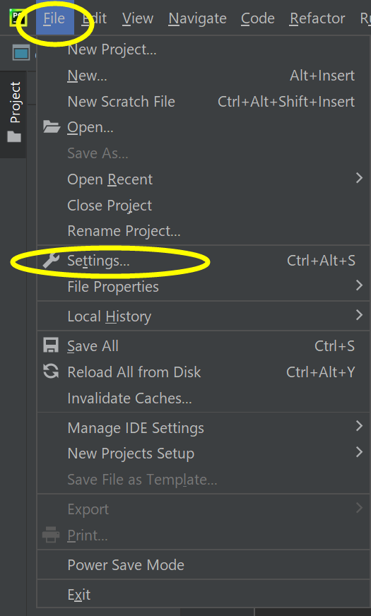

１．PyChramの日本語化の方法

file→ settingsを選択
plugins→ marketplaceを選択、「日本語」を入力します。installed→ OK

「再起動してもよろしいですか？」→restart しばらく待つとソフトが再起動して、日本語の画面になりました。
（中国語の場合は「Chinese」を検索しましょう。）
２．Pythonによる作ったゲーム
ルール： コンピュータと自分の数字を比べて、大きかった方が勝ち。ただし、二つの数字の差が30以上あいてる場合は数字が小さい方が勝ち。
実行の画面

コード
- for i in range(1,20):
- print(i,"回目")
- player=int(input("あなたの数字は？（1~100）:"))
- import random
- a = random.randint(1, 100)
- print(a)
- if player>a and player-a<=30:
- print("あなたの勝です！おめでとうございます！")
- elif player<a and a-player> 30:
- print("あなたの勝です！おめでとうございます！")
- else:
- print("残念です！コンピュータの勝です！")
感想
グループワークでゲームのルールを決まる過程はすごく面白かったです。元々自分が考えたルールを説明するのが難しく、他人のルールを理解するのもそんなに簡単ではないからですね。でも最後にルールをきちんと決め、このゲームを作りました（拍手）。一番好きなところはゲームをテストする時です。ゲームとしての面白さを感じました。
ホームページに戻る
- デザイン演習Ⅰ・Ⅱトップページ
- XBPトップページ